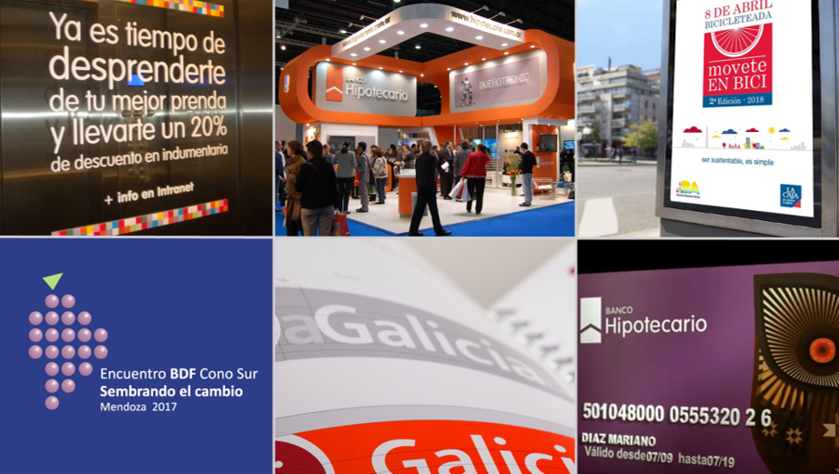
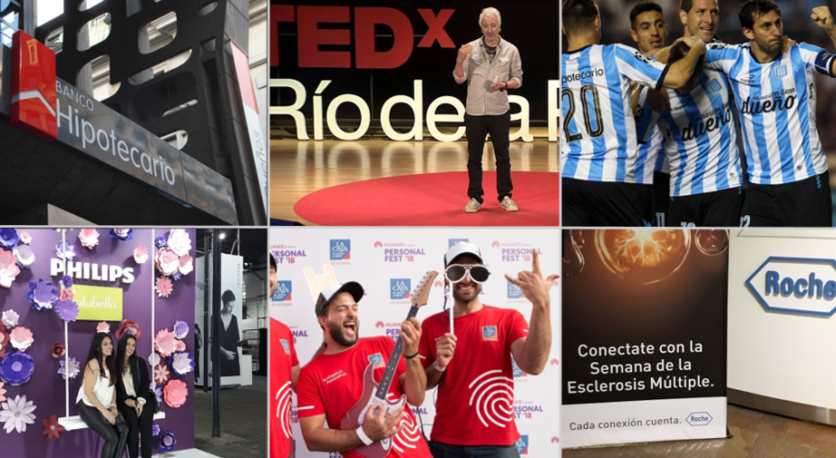
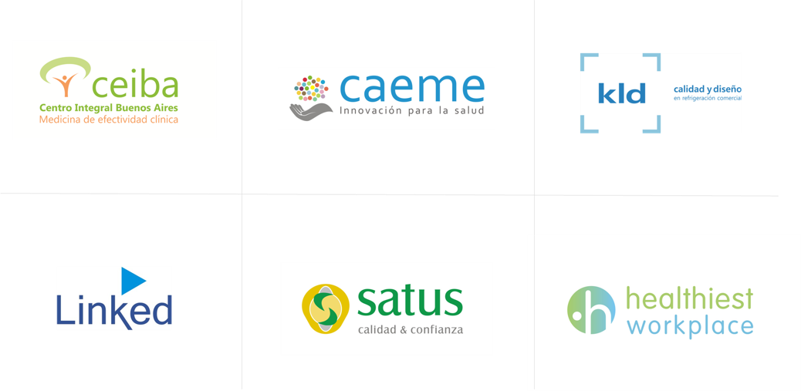
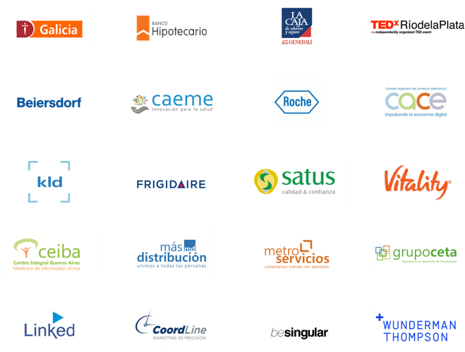

Comunicación estratégica y desarrollo de marca.
Planificación estratégica + creatividad+ diseño + producción.
Nuestro propósito es cuidar y desarrollar marcas en todos sus ámbitos de acción, para que también ellas alcancen su propósito en forma exitosa. Las cuidamos desde su construcción, replanteo y sustentabilidad a lo largo del tiempo; con más de 30 años de experiencia en el mundo de la comunicación.
Partimos de tres premisas fundamentales, que definen nuestra forma de encarar y pensar cada proyecto.
Todo lo que hacemos, consciente e inconscientemente, comunica.
Como aliados en la búsqueda de soluciones estratégicas.
Primero pensamos, después creamos y finalmente diseñamos.
Un formato ágil y eficiente para acompañar a todos nuestros clientes.
Desarrollamos nuestro Modelo estratégico 3D, que nos permite conocer al cliente en todas sus dimensiones. Para generar un diagnóstico, pronóstico y diseño de planes de acción, mediante el análisis e intervención sobre las siguientes temáticas. propósito | posicionamiento | territorio personalidad | atributos | audiencias vínculo | mensajes clave | identidad cultura | comunicación | imagen.




Mariano J. Díaz es fundador de md brandcare. Diseñador Gráfico (UBA) y Master en Dirección en Comunicación Institucional (UCES). Profesional especializado en comunicación e imagen corporativa, publicidad y marketing. Docente universitario UBA y UP. Orador TEDx. Premio Mercurio (AAM) y miembro del jurado de sus casos. Con más de 30 años de experiencia, desarrollada desde el plano creativo para agencias y la consultoría independiente; como también desde las gerencias de publicidad y marketing de Banco Galicia y Banco Hipotecario. Liderando sus procesos de cambio cultural, identidad corporativa y posicionamiento, con referentes como Joan Costa y Ronald Shakespear.
 Te proponemos conocernos. Hablemos.
info@mdcomunicacion.com | +54 911 4417 0937.
Ciudad Autónoma de Buenos Aires | Argentina.
Te proponemos conocernos. Hablemos.
info@mdcomunicacion.com | +54 911 4417 0937.
Ciudad Autónoma de Buenos Aires | Argentina.